Навiны
22.12.2022
27.12.2022 в 11.00 по
адресу:
г. Заславль, ул.
Советская,
134 состоится заседание
комиссии по противодействию
коррупции государственного
предприятия «Минрайтеплосеть».
Секретарь комиссии –
Масюкевич Екатерина Сергеевна
(тел. +375175132279)
21.12.2022
С 09.00 до 21.00 22.12.2022 будет отключено горячее водоснабжение и теплоснабжение объектов, запитанных от котельной Юбилейный в связи с выполнением работ по замене запорной арматуры.
12.12.2022
Государственное предприятие «Минрайтеплосеть» предлагает для сдачи в аренду следующее недвижимое имущество: Здание котельной, расположенное по адресу Минский район, Крупицкий с/с, аг.Крупица, ул.Школьная, 15А, общей площадью 876,8 м.кв.

25.10.2022
С 10.00 до 15.00 26.10.2022 будет отключено отопление и горячее водоснабжение объектов, запитанных от котельной Боровляны-6 в связи с выполнением работ по устранению замечаний, установленных в ходе приемки котельной на баланс.
20.10.2022
С 10.00 до 15.00 21.10.2022 будет отключено отопление и горячее водоснабжение объектов, запитанных от котельной Боровляны-6 в связи с выполнением работ по устранению замечаний, установленных в ходе приемки котельной на баланс.
18.10.2022
С 10.00 до 15.00 19.10.2022 будет отключено отопление и горячее водоснабжение объектов, запитанных от котельной Боровляны-6 в связи с выполнением работ по устранению замечаний, установленных в ходе приемки котельной на баланс.
17.10.2022
С 09.00 до 20.00 18.10 .2022 будет отключено отопление и горячее водоснабжение объектов, запитанных от котельной Копище для выполнения работ по реконструкции тепловой камеры.
17.10.2022
С 09.00 до 20.00 18.10 .2022 будет отключено горячее водоснабжение в жилых домах 7, 9, 10 Микрорайон-1, г. Заславль для выполнения работ по реконструкции тепловой камеры.
17.10.2022
С 09.00 до 20.00 17.10.2022 будет отключено отопление в жилых домах 7, 9, 10 Микрорайон-1, г. Заславль для выполнения работ по реконструкции тепловой камеры.
03.10.2022
С 09.00 до 17.00 04.10.2022 будет отключено горячее водоснабжение у потребителей котельной Ждановичи-1 для выполнения работ по врезке компенсаторов в тепловой камере магистральной сети горячего водоснабжения.
16.09.2022
С 08.00 до 20.00 19.09.2022 будет отключено горячее водоснабжение у части потребителей котельной Заславль-1для выполнения работ по устранению повреждения на трубопроводе горячего водоснабжения.
16.09.2022
С 09.00 до 17.00 19.09.2022 будет отключено горячее водоснабжение у потребителей котельной Ратомка (конный спорт) для выполнения работ по переврезке запорной арматуры в тепловой камере магистральной сети.
16.09.2022
В связи с большим объемом монтажных и приемо-сдаточных работ в рамках выполнения проекта по реконструкции котельной Прилуки продлены сроки планового останова котельной Прилуки до 22.09.2022.
12.09.2022
С 09.00 до 15.00 14.09.2022 будет отключено горячее водоснабжение объектов, запитанных от мини-ТЭЦ Мачулищи в связи с заменой запорной арматуры.
06.09.2022
21.09.2022 в 11.00 по адресу:
г. Заславль, ул. Советская, 134
состоится заседание комиссии по
противодействию коррупции
государственного предприятия
«Минрайтеплосеть».
Секретарь комиссии – Масюкевич
Екатерина Сергеевна
(тел. +375175132279)
17.08.2022
О согласовании сроков отключения
Минский районный исполнительный комитет согласовывает перенос сроков планового останова котельной Прилуки на период с 07.09.2022 по 20.09.2022.
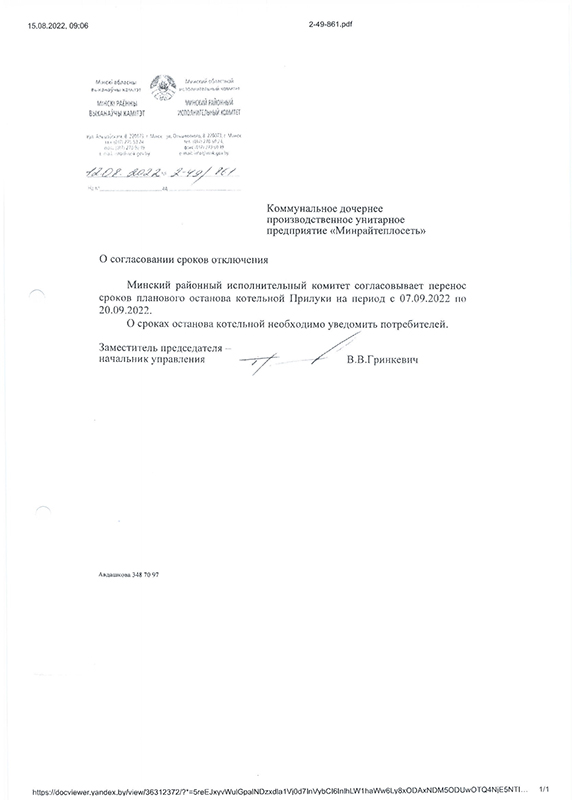28.06.2022
05.07.2022 в 11.00 по адресу: г. Заславль, ул. Советская, 134 состоится заседание комиссии по противодействию коррупции государственного предприятия «Минрайтеплосеть».
Секретарь комиссии –
Масюкевич Екатерина Сергеевна
(тел. +375175132279)
24.06.2022
В связи с большим объемом подготовительных работ по ремонту котельной перенесены сроки планового останова котельной Лесной на период с 20.07.2022 по 02.08.2022 (останов по ранее согласованному графику планировался с 22.06.2022 по 05.07.2022).
23.06.2022
График планового отключения горячего водоснабжения в жилых домах в межотопительный период 2022 года
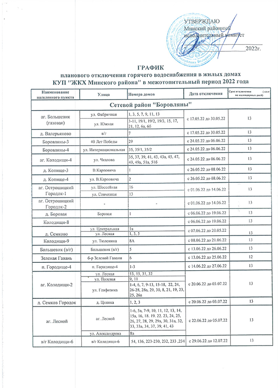21.06.2022
С 09.00 до 17.00 22.06.2022 будет отключено горячее водоснабжение объектов, запитанных от котельной Сеница-3 в связи с проведением ремонтных работ на котельной (установка теплосчетчиков после поверки).
21.06.2022
С 08.00 до 20.00 21.06.2022 будет отключено горячее водоснабжение объектов, запитанных от мини-ТЭЦ Мачулищи (ул. Молодежная, 5, 9, 9/2, 7, 11, 13, 15) в связи с плановой заменой тепловых сетей.
15.06.2022
С 8.00 16.06.2022 до 8.00 17.06.2022 будет отключено горячее водоснабжение у жилых домов по ул. Металлургическая, 12, 14, 16, 18, 20, 22 и детского сада, запитанных от ЦТП-3 котельной Гатово в связи с плановой заменой тепловых сетей.
15.06.2022
С 10.00 до 15.00 16.06.2022 будет отключено горячее водоснабжение объектов, запитанных от котельной Юбилейный в связи с проведением работ по реконструкции ВРУ 0,4 кВ.
07.06.2022
С 09.00 до 17.00 09.06.2022 будет отключено горячее водоснабжение у потребителей ТС «Квартал Зеленый Бор» (ул. Александрова 1-4, 6-12, 14, 16, 17, 19), ТС «Зеленый Бор – 3» (ул. Березовая Роща 99, 99/1, 99/2, 99/3, 99/4).ю ЧУП «Дамаан» (ТЦ «ГИППО»), ГУО «Ясли-сад №4» в связи с проведением работ на ВРУ котельной.
28.05.2022
С 8.00 31.05.2022 до 8.00 01.06.2022 будет отключено горячее водоснабжение у жилых домов по ул. Металлургическая, 12, 14, 16, 18, 20, 22 и детского сада, запитанных от ЦТП-3 котельной Гатово в связи с плановой заменой тепловых сетей.
28.05.2022
В связи с большим объемом монтажных работ в рамках выполнения проекта: «Реконструкция котельной п. Юбилейный с установкой котлов на МВТ для покрытия горячеводной, частично отопительной нагрузки с использованием незадействованной части существующего здания котельной» продлен срок планового останова котельной Юбилейная до 02.06.2022 (останов по ранее согласованному графику планировался на период с 17.05.2022 по 30.05.2022).
12.05.2022
13.05.2022 с 09.00 до 16.30 будет отключено горячее водоснабжение у части потребителей котельной Заславль-1 в связи с заменой запорной арматуры на тепловых сетях.
27.04.2022
28 апреля – Всемирный день охраны труда.
На протяжении многих лет Федерация профсоюзов Беларуси активно участвует в ежегодных мероприятиях и акциях, связанных с Всемирным днём охраны труда. Каждый год Международная организация труда выбирает центральную тему, к которой необходимо привлечь внимание правительств, работодателей и общественность как к нерешённой проблеме в сфере условий и охраны труда. К слову, с 22 по 28 апреля проходит “Неделя нулевого травматизма”.
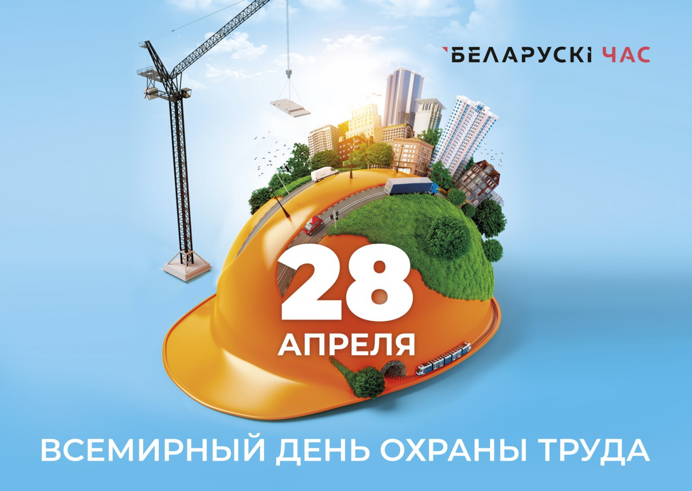
26.04.2022
В связи с проведением работ по плановой замене теплосетей будет отключено отопление объектов, запитанных от котельной Шаршуны, в период с 9:00 до 18:00 28 апреля 2022 г.
20.04.2022
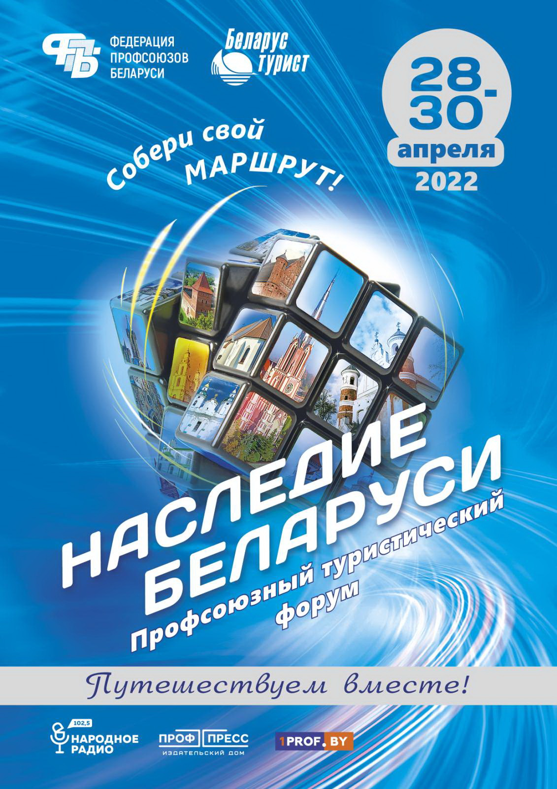16.04.2022
18.04.2022 с 08.00 до 20.00 будет отключено отопление, 18.04.2022 с 08.00 до 20.00 будет отключено горячее водоснабжение жилых домов 4, 6 по ул. Металлургическая, аг. Гатово в связи с плановой заменой тепловых сетей.
11.04.2022
Месячник безопасности
В Минской области с 4 по 30 апреля 2022 года проходит месячник безопасности, направленный на стабилизацию оперативной обстановки с пожарами и снижение риска гибели людей от внешних причин.
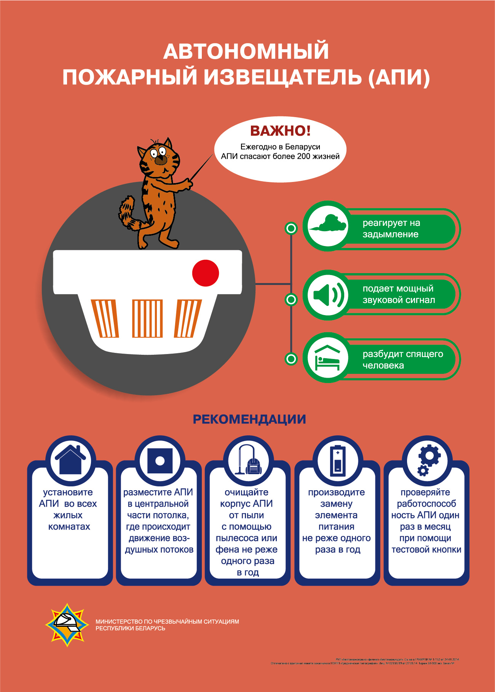 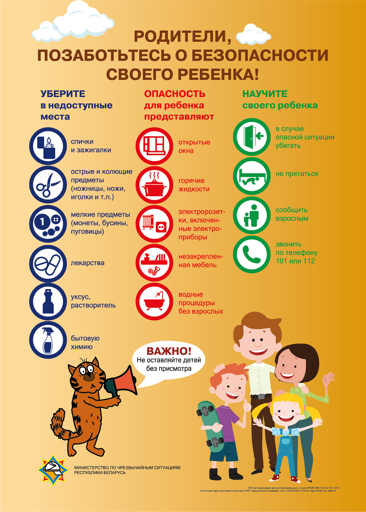 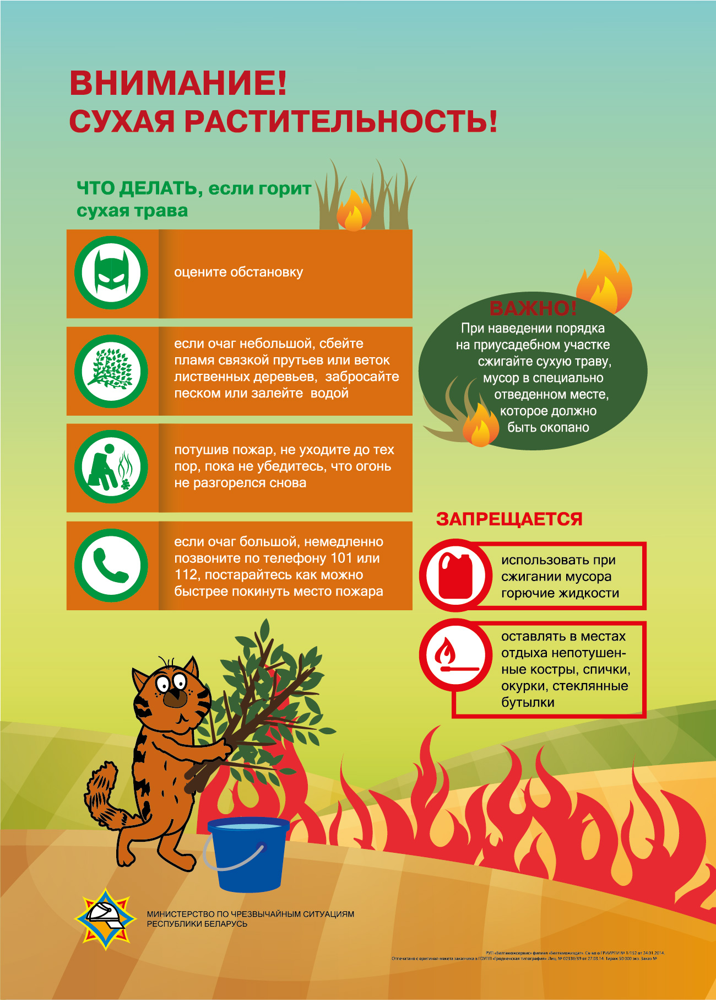 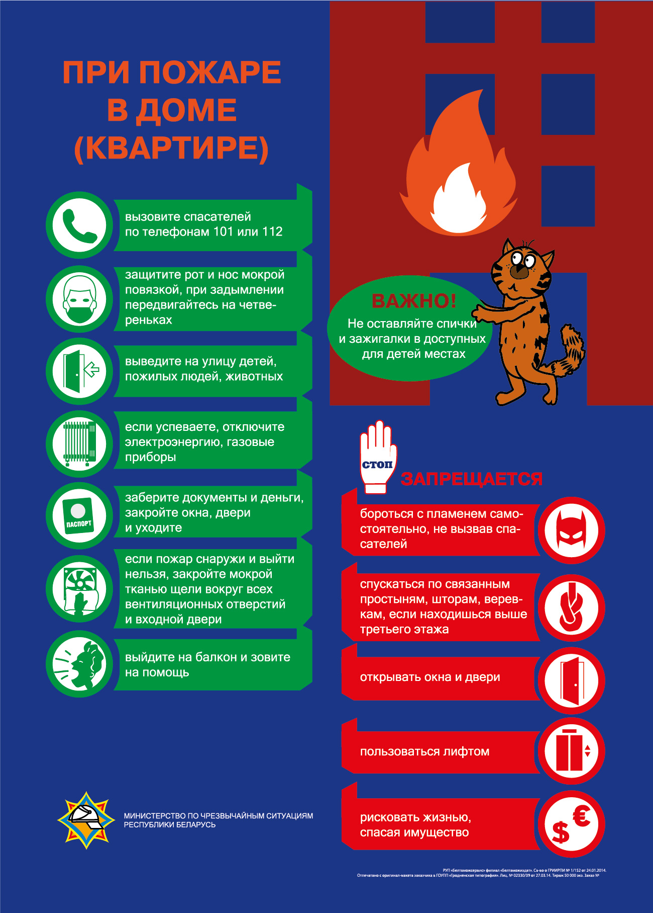05.04.2022
06.04.2022 с 08.00 до 20.00 будет отключено отопление, 07.04.2022 с 08.00 до 20.00 будет отключено горячее водоснабжение жилых домов 8, 11, 15 по ул. Металлургическая, аг. Гатово и ГУО "Гатовская СШ" в связи с плановой заменой тепловых сетей.
04.04.2022
05.04.2022 с 09.00 до 17.00 будет отключено отопление и горячее водоснабжение у потребителей котельной Юбилейный в связи с проведением работ по реконструкции объекта: «Реконструкция котельной п. Юбилейный с установкой котлов на МВТ для покрытия горячеводной, частично отопительной нагрузки с использованием незадействованной части существующего здания котельной».
29.03.2022
2022 год
объявлен
Годом
исторической памяти.
Президентом Республики Беларусь подписан Указ № 1, согласно которому в целях формирования объективного отношения общества к историческому прошлому, сохранения и укрепления единства белорусского народа 2022 год в Беларуси объявлен Годом исторической памяти.
Указ Президента Республики Беларусь от 01.01.2022 № 1 «Об объявлении 2022 года Годом исторической памяти».21.03.2022
21 марта 2022 года с 12.00 до 13.00 начальник главного управления контроля бюджетно-финансовой сферы Комитета государственного контроля Республики Беларусь Авхукова Юлия Владимировна проведет «прямую телефонную линию», с 13.00 до 14.00 прием жителей Минского района в здании Минского райисполкома по адресу: г. Минск, ул. Ольшевского, д. 8.
Во время «прямой телефонной линии» и личного приема вы сможете поделиться с представителем Комитета государственного контроля Республики Беларусь проблемами развития региона, высказаться по поводу работы должностных лиц вертикали, предприятий и организаций, деятельности контролирующий и надзорных органов.
Спектр тем, интересующих Комитет государственного контроля, разнообразен: от вопрос ов использования бюджетных средств, финансово-хозяйственной деятельности промышленных, аграрных, строительных, жилищно-коммунальных предприятий, организаций социальной сферы до работы чиновников с гражданами, развития объектов придорожного сервиса и агроэкотуризма.
Высказать предложения и задать вопросы вы можете по телефону: +37517 542 02 30.
Предварительная запись на личный прием: +375 17 270 33 76.
16.03.2022
17.03.2022 с 09.00 до 18.00 будет отключено отопление и горячее водоснабжение у потребителей котельной Заславль-3 в связи с проведением работ по переврезке сетевогАб насоса.
27.01.2022
31.01.2022 с 09.00 до 17.00
будет отключено отопление у
потребителей котельной
Привольный
в связи с проведением
работ по переврезке запорной
арматуры в здании КУП «ЖКХ
Минского района»,
расположенного по адресу:
п.
Привольный, ул. Мира, 21.
26.01.2022
27.01.2022 с 09.00 до 17.00 будет отключено отопление у потребителей котельной Семково в связи с проведением работ по переврезке теплотрассы на жилой дом по ул. Парковая, 1А.
15.12.2022
17.01.2022 с 09.00 до 17.00 будет отключено отопление у потребителей котельной Прилуки в связи с проведением работ по замене вводных задвижек, выполняемых в рамках строительного подряда ОАО «Белремстройсвязь» по объекту: «Реконструкция Блок: гараж-дизельная-склад, по адресу: Минская обл., Минский район, Сеницкий с/с, аг. Прилуки, ул. Лесная, 15А/1».
16.12.2021
17.12.2021 с 09.00 до 14.00 будет отключено горячее водоснабжение у потребителя котельной Боровляны-3 – жилого дома ЖСПК «Уланстрой» в связи с проведением ремонтных работ на котельной.
15.12.2021
16.12.2021 с 08.00 до 20.00 будет отключено горячее водоснабжение у потребителей котельной Юбилейный в связи с проведением работ по реконструкции объекта «Реконструкция котельной п. Юбилейный с установкой котлов на МВТ для покрытия горячеводной, частично отопительной нагрузки с использованием незадействованной части существующего здания котельной».
12.11.2021
15.11.2021 с 09.00 до 18.00 будет отключено горячее водоснабжение у потребителей котельной Сеница-5 (ТС Сеница-2008) в связи с проведением работ по переврезке водоподогревателя горячего водоснабжения.
04.11.2021
Акция «Беларусь – энергоэффективная страна»
Ко дню энергосбережения (11 ноября 2021г.) в Республике Беларусь с 08.11 по 12.11.2021 проводиться акция «Беларусь-энергоэффективная страна». Государственное предприятие «Минрайтеплосеть» напоминает о способах экономии энергоресурсов.
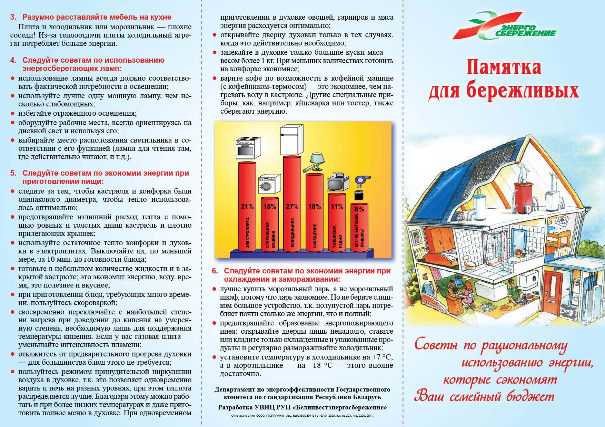 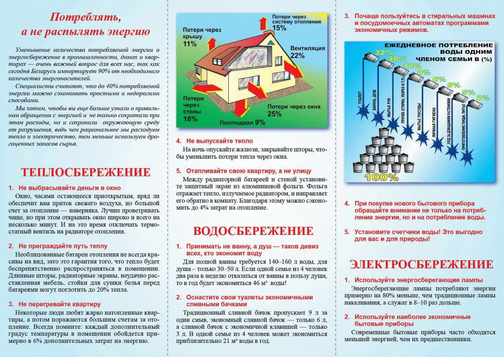11.10.2021
14.10.2021 с 08.00 до 20.00 будет отключено горячее водоснабжение у потребителей котельной Заславль-1 (ТС «Новый Заславль-1», ТС «Новый Заславль-2», ТС «Новый Заславль-3») в связи с окончанием работ по переврезке сетевых трубопроводов на ЦТП-8.
29.09.2021
30.09.2021 с 09.00 до 17.00 будет отключено отопление и горячее водоснабжение у потребителей котельной Петришки в связи с проведением работ на ВРУ-0,4кВ.
29.09.2021
29.09.2021 с 09.00 до 13.00 будет отключено горячее водоснабжение у потребителей котельной Мини-ТЭЦ Мачулищи в связи с проведением работ по переврезке запорной арматуры.
27.09.2021
29.09.2021 с 09.00 до 20.00 будет отключено отопление и горячее водоснабжение в ГУО «Ясли-сад №3 «Радуга» г. Заславля» для проведения работ по переврезке тепловых сетей.
27.09.2021
29.09.2021 с 09.00 до 20 .00 будет отключено отопление в жилых домах по адресу г. Заславль, Микрорайон-1, д. 7, 9, 10 для проведения работ по переврезке тепловых сетей.
27.09.2021
28.09.2021 с 09.00 до 20.00 будет отключено отопление и горячее водоснабжение у потребителей котельной Ждановичи-2 для проведения работ по переврезке теплообменника.
27.09.2021
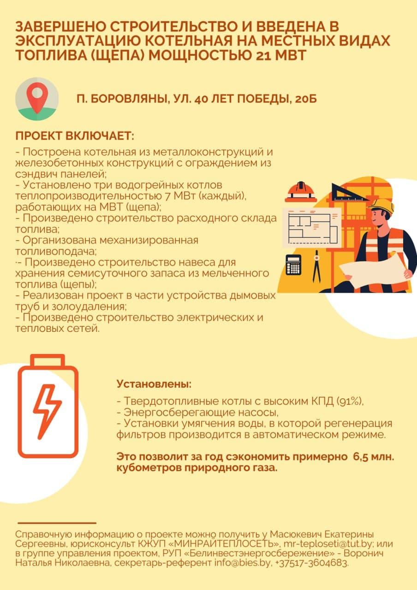23.08.2021
Графикпланового отключения горячего водоснабжения в жилых домах в межотопительный период
2021 года
23.08.2021
Аукцион по продаже капитального строения